початок був дуже неочікуваний
01
дуже сильний дебют
Я дуже сильно напився. А ти сиділа біля мене, давала воду, поливала водою у ванній і гріла мої холодні руки. І саме з цього чомусь почалась одна з найкращих штук у моєму житті.
ну привіт
офіційно
07.09.2026
Макс + Таня
З усіма важливими штуками: ванна, нічні розмови, довгі прощання, желейки, зорі, тактильність, дурні приколи і те, як мені добре з тобою.
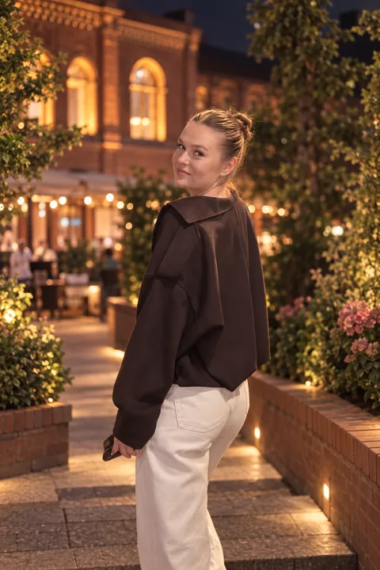
Сонечко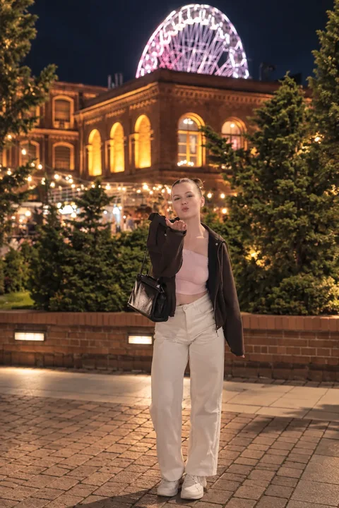
золотко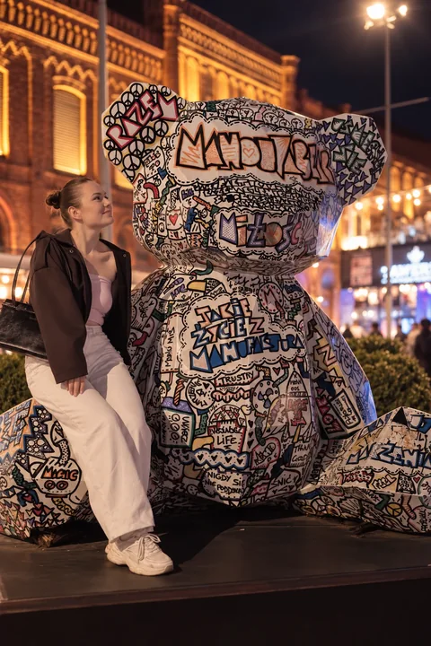
Кицякороче, як це все почалось
Я не буду брехати й робити з цього ідеальну казку. Мені якраз подобається, що все почалось дивно, але дуже по-нашому.
Я дуже сильно напився. А ти сиділа біля мене, давала воду, поливала водою у ванній і гріла мої холодні руки. І саме з цього чомусь почалась одна з найкращих штук у моєму житті.
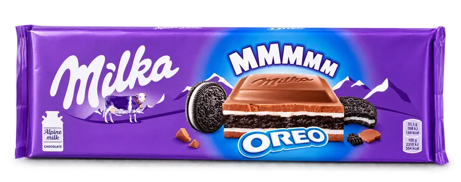
На наступний день я прийшов до тебе на роботу вже тверезий, приніс шоколадку і вибачився. І це вже було хоч трохи більш достойне знайомство.
Я досі майже нічого з цього не пам'ятаю. Але факт залишається фактом: була маленька дірка, я потягнув шкарпетку — і вона порвалась.
«бля в чому прикол такі короткі шкарпетки носити» — це просто офіційно лишається тут як мем.
Перша нормальна довга прогулянка удвох. Я провів тебе додому, ми дві години сиділи близько на лавці, і на прощання були довгі обійми.
натисни на серце між нами
Ти сама взяла мене за долоню. А потім на прощання поцілувала у відповідь. Ну і всьо — офіційно.
За кілька днів усе дуже природно стало ще ближчим: поцілунки, твоя ініціатива, а потім «люблю тебе», яке вже не треба було витягувати — воно просто стало нашим.
03:00 — 04:00
Мабуть одна з моїх найулюбленіших штук про нас — це як ми не хотіли йти спати, сиділи до 3–4 ночі, говорили про все підряд і ловили той дивний кайф від того, що нам просто добре разом.
21.09 · десь між 04:00 і 05:00
Після того, як ти повернулась з Польщі. Ідея була буквально на пару хвилин.
Пару хвилин перетворились приблизно на годину.
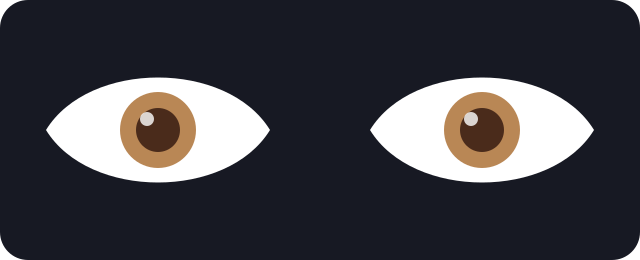
А раніше не могла дивитись :)
натисни на обійми
Ніжно. Просто тому що дуже хотілось бути ближче.
окрема дуже правдива заява 😛
«Ні краплі не шкодую що почекав поки ти приїдеш»
і, здається, саме тому мене так трусило.
ну ше трішки
Окрема важлива тема — як ми сиділи годинами біля тебе, не хотіли розходитись, прощались по 10 хвилин і кожен раз знаходили причину постояти ще трохи.
сиділи біля тебе годинами і не хотіли йти
прощались хвилин по 10 і все одно стояли далі
«я так до ранку міг би сидіти»
«кожен раз метелики від цього»
і навіть коли вже треба було йти — не хотілось
дуже важлива річ
Мені дуже подобається все, де є якась фізична близькість між нами. Обійми, руки, голова на плечі, голова до голови, поцілунки, просто сидіти притулившись.
і все одно кожного разу мало.
спокійно, тепло і по-нашому.
а ти дивишся так, що я іноді просто забуваю, що хотів сказати 😛
Бо розмова почалась з того, що в мене холодні руки. Я сказав, що я ящірка. Потім жаба. А потім ти придумала, що я пуголовок.
температура: підозріла
Тут буквально нема що пояснювати. Просто посунути ближче — і вже добре.
Це один із моментів, які я реально міг би повторювати безкінечно.
«в мене такі мурашки пішли»
Мені дуже подобається, коли ми просто дивимось одне на одного. А сірувато-блакитні тут, якщо що, мої — не переплутай 😛
дуже об'єктивний профіль
Тут усе, що в мене вже дуже чітко асоціюється з тобою: квіти, смакота, желейки, машини і ще купа дрібниць. Мімімі, коротше 🥰
кущові троянди, півонії, ранункулюси й еустоми. Збирай як хочеш — тут помилитись важко 🌸
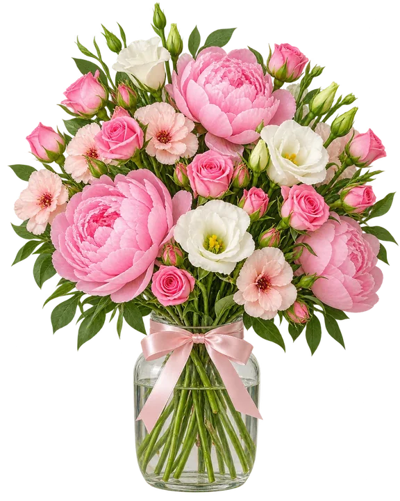
Snickers, сирки, полуничне молоко і желейки. Коротше, набір речей, з якими тебе вже дуже легко асоціювати 😛
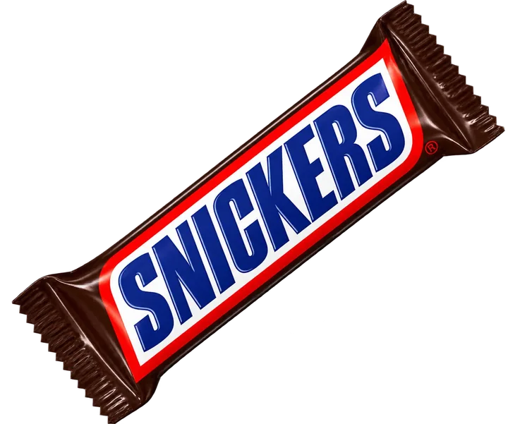
Snickers бо «я люблю саме більше снікерс»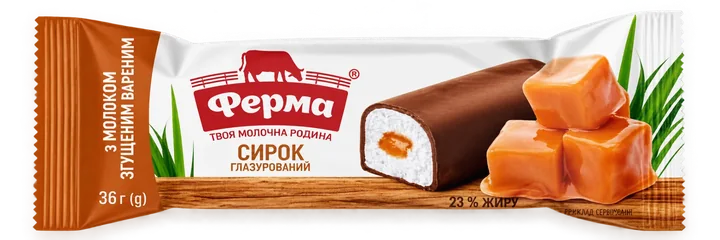
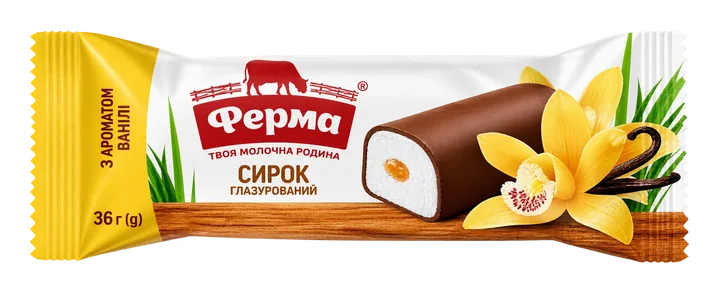
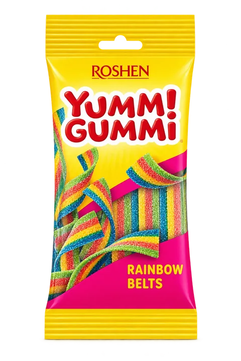
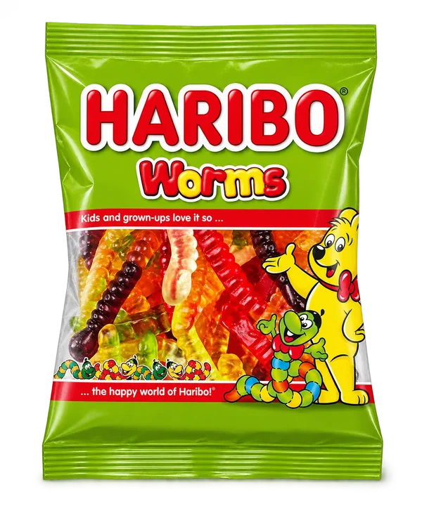
желейки тут законно важливі
Трошки автомобільної дипломатії: BMW для тебе, Audi — щоб я теж не мовчав.
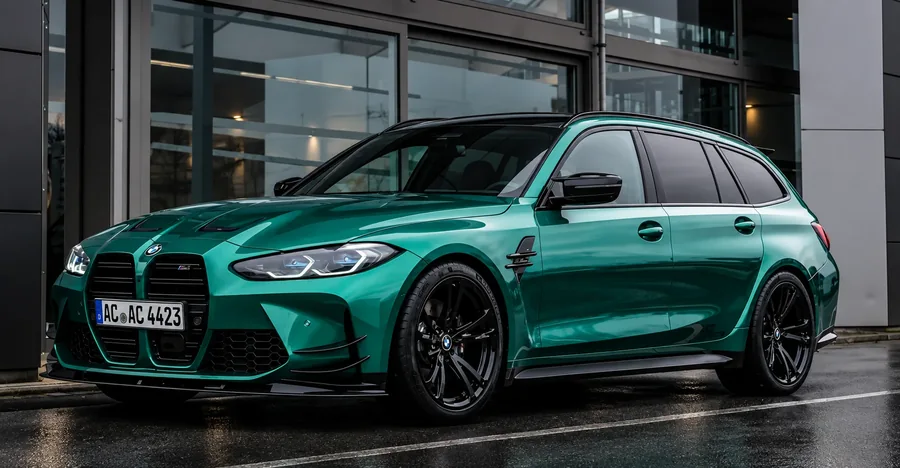
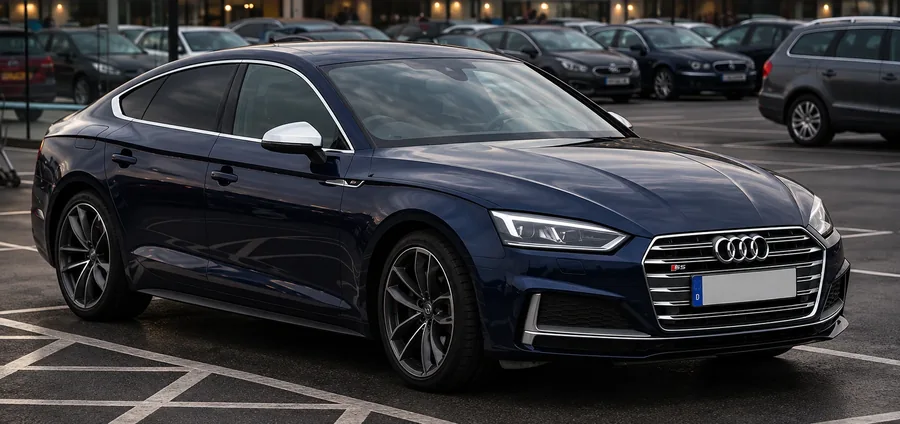
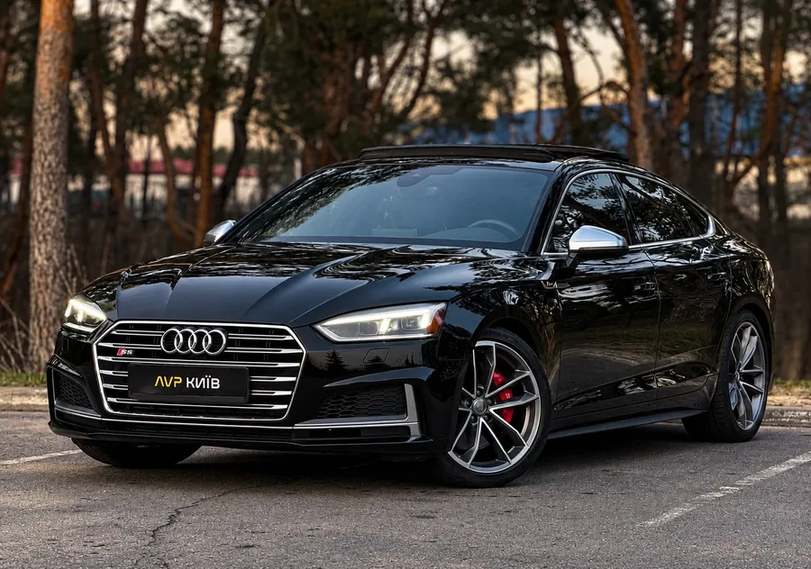
класифікатор Макса
Тут усе офіційно: «хороша собачка» → «я мальтіпу» → потім бібізяна. А по лінії холодних рук було: ящірка → жаба → пуголовок.
натисни й побачимо хто ти сьогодні
Коли ти гладила мене по волоссю і сказала «хороша собачка», я відповів: «я мальтіпу».
Еволюція мальтіпу. Актуальна версія, бо тепер ти взагалі часто мене так називаєш.
Через холодні руки: спочатку ящірка, потім жаба, а потім уже пуголовок. Абсолютно логічна еволюція.
Бо вночі ти його конфіскувала і не хотіла віддавати. Ми ж домовились: «нє нєльзя» 😛
реальні скріни
Тут уже без переказу. Просто лишаю моменти, які мені дуже подобаються, як вони є.
ну і як ти це знайшла?
Тут майже нічого нема. Майже.
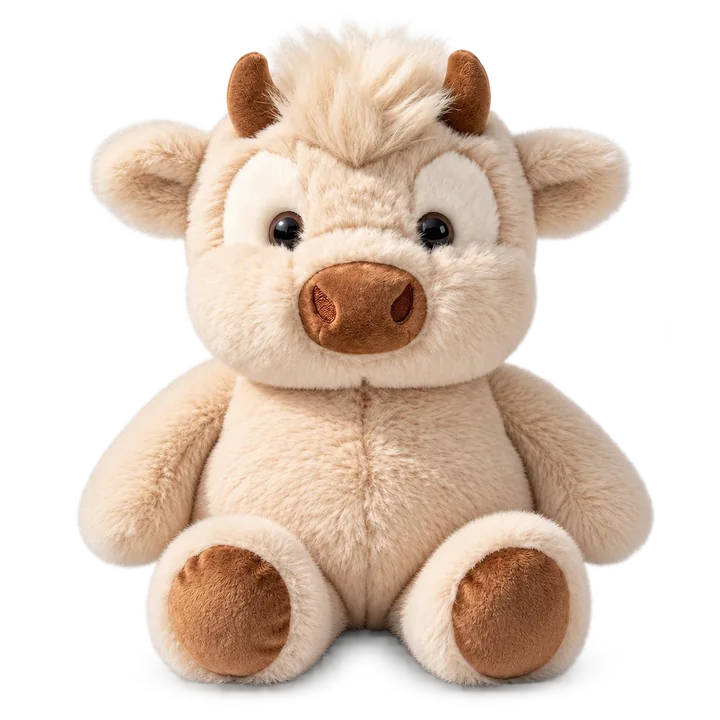
вона десь в дорозі. просто чекає свого моменту, щоб бігати з тобою 🥺
на кінець
Тут уже без приколів, хоча зовсім без них я теж не вмію.
Тані
Я довго думав, що сюди написати, щоб це не було якимось занадто пафосним текстом, який ніби красивий, але взагалі не про нас.
І найчесніше, що я можу сказати: мені дуже добре з тобою. Реально. Мені подобається, що ми можемо і говорити про серйозне, і сміятись з якоїсь гречки, і сидіти вночі до 3–4 ранку, бо ніхто не хоче закінчувати розмову.
Мені подобаються наші прогулянки, наші прощання, коли ніхто не хоче йти, обійми, тримати тебе за руку, класти голову тобі на плече і коли ти кладеш свою, дивитися на зорі, шукати ведмедиці, загадувати бажання і просто бути поруч. Оце все — мімімі 🥺
Мені дуже цінно, що ми так швидко стали близькими, що між нами є довіра, що ми все обговорюємо і що після розмов з тобою реально стає легше.
В нас усе якось не як в людей. Але мені саме це і подобається. Час покаже як карта ляже, але поки вона лягла мені дуже подобається 😛
Короче. Люблю тебе. Дуже ❤️
Твій мальтіпу / бібізяна / пуголовок ♡
я десь тут. навіть якщо зараз не поруч.